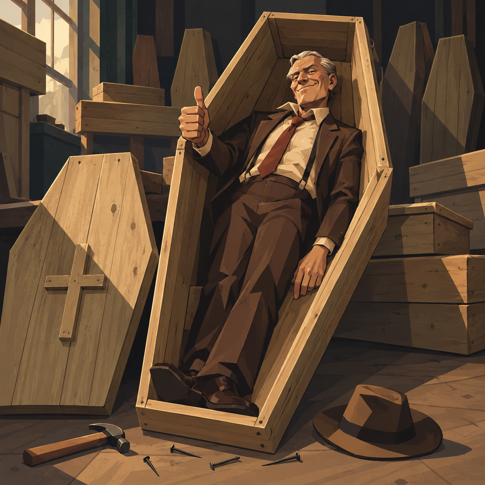

SERVING THE LIVING. MOSTLY.
Tomorrow isn’t
guaranteed.
Your coffin is.
The West has a thousand ways to ruin your day.
We have a surprisingly convenient solution for the last one.
Fast local deliveryHand-built, unfortunately
